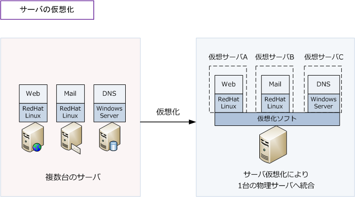
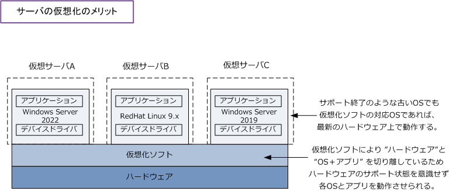
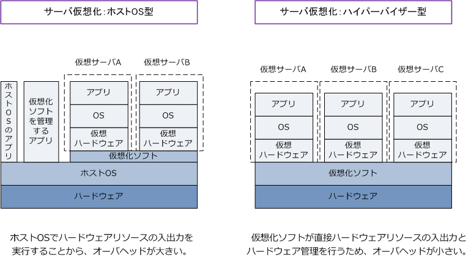
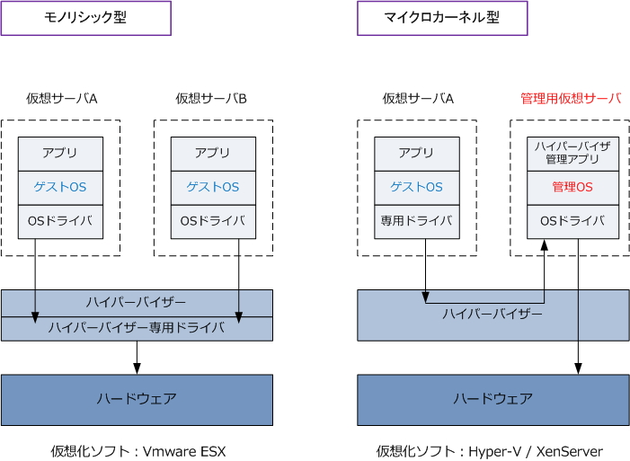

Server Virtualization
仮想化とは
仮想化とは、サーバなどのハードウェアリソース（CPU、メモリ、HDD）を、物理的な構成にとらわれずに 論理的に統合や分割することができる技術のことです。 仮想化はサーバ、ネットワーク、ストレージなどに 適用できる技術ですが今回はサーバ仮想化について解説していきます。サーバ仮想化により、1台のサーバを 複数台のサーバであるかのように論理的に分割して、それぞれにOSやアプリを動作させられます。

※ サーバ仮想化の例として、10台くらいの物理サーバを、冗長性も考慮して2台に集約してサーバ仮想化することが多いです。
そもそも、OSが同じなら1台のサーバに複数のアプリケーションを同時に動かせば良いのではないかと 疑問が生まれるかもしれませんが、サーバでは安定してソフトウェアを動作させるために、サーバ1台に 1つのアプリケーションを動作させることが多いです。
仮想化のメリット
・ サーバ台数の削減 サーバ仮想化で上図のとおりサーバ台数を削減できます。 1台の物理サーバであっても仮想化ソフトの上に 「1つのOSに1つのアプリケーション」を実現しています。そして、サーバ台数を削減できることによって、 ランニングの保守費用の削減、省電力化、省スペース化を実現することになります。
・ ハードウェアリソースの効率利用 1台の物理サーバ上で「1つのOSに1つのアプリ」という構成の場合には、ハードウェアリソースが苦しい サーバもある一方、負荷の軽いサーバも存在していました。仮想化によって例えば負荷のピークが異なる サーバを集約することにより、集約した1台の物理サーバのハードウェアリソースを効率的に利用できます。
・ サーバ環境のカプセル化 仮想化ソフト上で動作するサーバは、どれだけ古いOSであっても、どれだけ最新のハードウェア環境で あっても、その仮想化ソフトの対応OSであれば問題なく動作します。このため、ハードウェアを交換した ことでドライバが認識しなくなるような問題は発生しません。あくまで仮想化ソフト上で動作できればOK。

※ ソフトウェアで実現した1台の仮想的なコンピュータシステム（仮想サーバ）は、あたかも1台の物理的なマシンとして動作します。
2種類の仮想化ソフト
仮想化を実現するサーバ仮想化ソフトには、ホストOS型とハイパーバイザー型の大きく2種類あります。
| 仮想化の方式 | 説明 |
|---|---|
| ホストOS型 | ホストOSのミドルウェアとして仮想化ソフトが動作する。手軽に構築できるの最大のメリット。 ホストOS経由でハードウェアの入出力処理を実行するため、オーバヘッドが大きい。 製品例 ： VMware Workstation/Player/Fusion、Oracle VirtualBox |
| ハイパーバイザー型 | ホストOSを利用せず、仮想化ソフトが直接物理的なハードウェアの入出力処理を実行する ためオーバヘッドが小さく、ハードウェアリソースを柔軟に管理可能。現在の主流な方式。 製品例 ： VMware ESX、Microsoft Hyper-V、Citrix XenServer |

実際のCPUやメモリなどは、物理的なハードウェアだけが持っているので、各仮想サーバはそのI/O命令を 仮想化ソフトを介し物理のハードウェアに伝えています。各仮想サーバに割り当てる物理的なハードウェア リソースは異なっていても問題ありません。
例えば、仮想サーバAにはメモリ容量を4GB、仮想サーバBにはメモリ容量を8GBなどです。物理マシンの ハードウェアリソースには限りがあるので、適切に割り当てる必要があります。
ハイパーバイザー型の仮想化ソフト：モノリシック型とマイクロカーネル型
ハイパーバイザー型の仮想化ソフトにはモノリシック型とマイクロカーネル型の大きく2種類があります。
| 3種類のタイプ | 説明 |
|---|---|
| モノリシック型 | ハイパーバイザー専用のデバイスドライバを使用して物理デバイスへアクセスするタイプ。 ゲストOSはハードウェアに直接アクセスせず、ハイパーバイザーが用意した仮想NICなどに アクセスして、そこを経由した上で物理的なデバイスを利用する。 |
| マイクロカーネル型 | ハイパーバイザーを管理する特別なOS（管理OS）の用意する仮想的なデバイスドライバを 使用して、物理デバイスへアクセスするタイプ。ゲストOSは直接アクセスすることはない。 |
※ 各仮想サーバは独立しておりそれぞれ異なるOSをインストールできます。仮想サーバ上にインストールするOSがゲストOSです。
